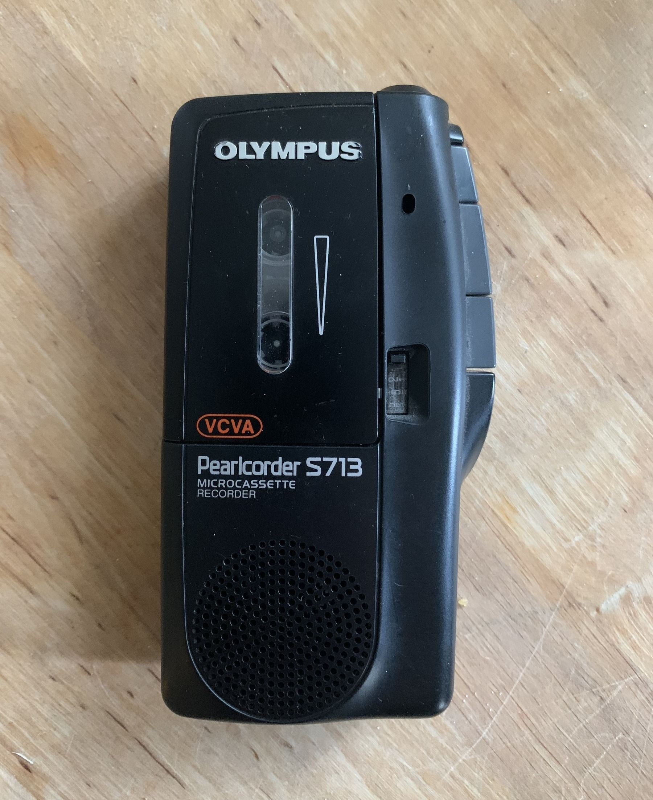
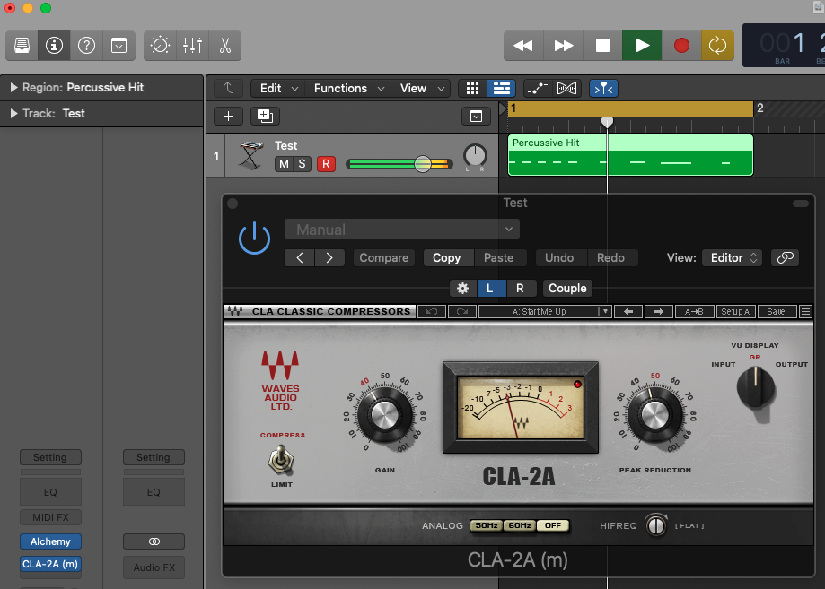

New planters! 20° C today so I also mixed in soil and manure along with my cayenne, chili, habanero, beet and kale starters 🌱
Finished reading: The Bodhicaryavatara: A Guide to the Bodhisattva Way of Life: The 8th Century classic in 21st Century language by Santideva 📚
A person who is completely blinded by illusion and believes it to be reality is in a very difficult position. Without the perspective that is gained from stepping outside of the illusion and seeing it in a detached way they will remain in the cycle of suffering.
I just came across this little guy! I think I may have purchased this around ~2004 for university? It definitely pre-dates me having a proper DAW or recording gear.
Side A of the cassette is one long recording of the TV? A lot of old commercials and crappy daytime television, I’ve been able to get a lot of nice sound and voice slices from it.
Side B contains a lot of quick audio notes such as a guitar melody, chord progression, playing synth or a loop from my old Korg ElecTribe Rhythm. As you can imagine there are a lot of nice sample/loop points.
This will be fun to layer upon and build out some nice pieces.

Waves Plug-ins, Logic Pro and Apple's M1 processors
According to Waves support site:
Waves software is not yet officially supported on Apple Computers with the new Apple Silicon M1 processors. We are working on providing official support. We expect developments in the near future and will update this page with new developments as they are available. In the meantime, here are our findings:
❌ Logic Pro, GarageBand, MainStage, Final Cut Pro Although Apple has announced that its proprietary DAWs are officially supported natively on M1 processors (without Rosetta 2), we have found that Waves plugins do not load or work properly in these DAWs on M1 processors.
This doesn’t mean we need to return our M1 back for an Intel Mac…
My setup is as follows:
- M1 MacBook Pro 13”
- Waves Central 12.0.19
- CLA-2A Compressor (V 12.0.0)
We can right-click Logic Pro.app -> Get Info (or select and ⌘ + i) and select the “Open using Rosetta” checkbox.
This will run Logic Pro under the Intel emulation (this should only be needed if you run plug-ins that aren’t yet M1 native).
I’ve now setup an empty project with a single software instrument track using Alchemy and have successfully applied the CLA-2A compressor to the track!
This is my first test, but I imagine that any non-M1 plug-ins will work when using Logic Pro under Rosetta 2.

The new Quick Sampler in Logic Pro X̶ is so easy and useful..
TIL:
You can quickly add a Drum Machine Designer track to your project based on a sliced sample.
- Add a sample to Quick Sampler, then click Slice.
- Make adjustments to the slices in the Sampler waveform display.
- Click the Action pop-up menu (or Control-click the Sampler waveform display), then choose Create a Drum Machine Designer Track.
Logic Pro automatically creates a new software instrument track with Drum Machine Designer inserted. Each sample slice is mapped to a pad in the Drum Machine Designer. Each pad corresponds to a particular MIDI note.
First Inspirations
I’ve been enjoying the creative prompts over at Valhalla DSP’s blog and thought I’d piggyback a little.
Music has always been a part of my life, I remember not being allowed to watch MTV but I’d wake up early on Saturday mornings to sneak some time in (this was when MTV was actually playing music videos).
I was lucky to have teenage cousins that would tape either from the radio or from their own collection and give me mix tapes. Because of this I was obsessed early on with Smashing Pumpkins, Deftones, Weezer, Nirvana, Presidents of the United States of America, The Cranberries etc…
Though I grew up in a fundamentalist evangelical household, it wasn’t often I was denied “secular” music (though my parents were stoked if I found something at a christian bookstore) and if I was denied, I’d request Marylin Manson or whatever on the next mixtape and later on just grab everything via Napster (I know, I know…).
I was and am still guitar obsessed, synthesizers came towards the end of my teenage years when I discovered Radiohead’s “Kid A.” I had never heard a record like that but I lived with my Sony Discman and just listened over and over trying to figure out how they were making all those sounds. But ultimately I wanted to be like Billy Corgan (minus being an asshole).
This was the first Smashing Pumpkins album (though it’s a collection meant to be a sort of mixtape of itself) I borrowed from a friends brother. I didn’t even own a CD player yet and had to listen via the CD drive on our old Gateway 2000 PC running Windows 95. I listened to “Hello Kitty Kat” over and over and over…
I owned this album on cassette but vividly remember the music video, one thing I did love about 90’s music was the distinct vocal stylings amongst all the artists.
Though I never cared to venture beyond “Dookie,” I can’t leave this out, it’s what led me to start playing drums in the 6th grade and later guitar. I probably wore the tape out. I convinced my mom to buy this for me and later she freaked out as she saw “fuck” appear in the lyrics for the track “Longview.” If I remember correctly, I “promised” I would just “skip” that song when listening.
Aside from Smashing Pumpkins, the other band I would obsess over throughout my teens was Deftones. I bought “Adrenaline” and later all the albums, “maxi singles,” import versions, you name it.
Finished reading: The Zen Teachings of Bodhidharma by Red Pine 📚
Finished reading: Blood-Soaked Buddha/Hard Earth Pascal for a second time this year 📚

Finished reading: Dreaming in Code: Two Dozen Programmers, Three Years, 4,732 Bugs, and One Quest for Transcendent Software by Rosenberg, Scott 📚
Software is a heap of trouble. And yet we can’t, and won’t, simply power down our computers and walk away. The software that frustrates and hogties us also captivates us with new capabilities and enthralls us with promises of faster, better ways to work and live. There’s no going back. We need the stuff more than we hate it.
Starting to dig into Apple’s CoreMIDI documentation and I finally understand the complaints about terrible documentation and broken API’s in the Apple dev world.
New ambient piece “Currents and Tides” posted via my Bandcamp, Spotify, Apple Music, etc…


Finished reading: Falling Awake by Kabat-Zinn, Jon 📚

I totally missed the first “Challenge Day” (day 19) where you build an app from scratch… I thought it was a link to the project 1 challenges 😬
I decided to do a temperature converter implementing the Measurement instance.
The head scratcher was initially returning a type Measurement<UnitTemperature> from my struct due to complaints from Swift, typecasting got me nowhere also. The trick ended up being to switch the return type back to Double and call value on my return variable like return convertedTemp.value so that I could format the output to 1 decimal point and not get all the extra NS output data.


Finished reading: Wherever You Go, There You Are by Kabat-Zinn, Jon 📚
I often get these Walden ideas of wanting to retreat into the forest for extended periods of time, then I read the following sentence in the section titled “Parenting as Practice” 😅
For each child, it would be at least an eighteen-year retreat, with virtually no time off for good behavior.
Day 22 was Project 2, part 3. This consisted of a quiz and a few challenges to add to the “Guess the Flag” app. I added a “Total Score” to the bottom as well as two individual counters that keep track of the correct and wrong answers. I also removed the alert after each selection and only show on an incorrect answer with some info and their new point deducted score.


Day 21 of #100DaysOfSwiftUI took us into part 2 of project 2 where we did some VStack’s (containing a random pull of three flag images we added to our projects assets along with a random number between 0 to 2 to compare with the correct answer) within a ZStack (displaying our gradient). We then send a notification saying Correct or Wrong and call a function to refresh the country/flag and new answer for the games continuation.
Day 20 of #100DaysOfSwiftUI introduced VStack. HStack and ZStack for arranging views. We also looked at colors, gradients, buttons, images and showing alerts.
I combined Day 17 and 18 of #100DaysOfSwiftUI where we built our first tip calculating app. I was itching to do the challenges… I managed to get the Amount Per Person to show only when Number of people is more than 2 or none.

I’m starting to abandon outboard gear in favor of a small collection of plugins I’ve recently invested in. I’ve basically re-created a lot of sounds from my physical pedalboard but now I can queue and sync delays/reverb/tremelo easily with the clock in Logic Pro X. I know, I know… this has been a thing for a long time 😅
Day 16 of #100DaysOfSwiftUI begins “Project 1” part one aka “WeSplit” where we did an overview of elements I assume we’ll be using in this tip calculator. This included modifying the @State property wrapper, adding navigation, creating a form and the basic layout of a SwiftUI project in Xcode.
Day 15 of #100DaysOfSwiftUI was the third and final day of review. I looped back over (pun intended?) closures, properties, polymorphism by use of classes and typecasting. I also picked up Understanding Swift and Pro Swift via Hacking with Swift over the weekend to invest further into my learning.
Day 13 of #100DaysOfSwiftUI is one of three recap days. Looked over variables, loops, constants, switch statements…


Day 11 of #100DaysOfSwiftUI was all about protocols, extensions and protocol-oriented programming (POP).
David Abrahams via his talk at WWDC:
So, yes, Swift is great for object-oriented programming, but from the way for loops and string literals work to the emphasis in the standard library on generics, at its heart, Swift is protocol-oriented.
Hōjicha is my new (mildly) caffeinated obsession:
From Wikipedia:
Hōjicha (焙じ茶, ほうじ茶) is a Japanese green tea. It is distinctive from other Japanese green teas because it is roasted in a porcelain pot over charcoal, whereas most Japanese teas are steamed. The tea is fired at a high temperature, altering the leaf color tints from green to reddish brown. The process was first performed in Kyoto, Japan, in the 1920s and its popularity persists today
Steep for 45 seconds at 85º - 90º C

Day 10 of #100DaysOfSwiftUI was all about classes, inheritance, overriding (also blocking this via final), mutability and the differences between structs and classes. Important note:
SwiftUI uses structs extensively for its UI design. Well, it uses classes extensively for its data: when you show data from some object on the screen, or when you pass data between your layouts, you’ll usually be using classes.
Day 9 of #100DaysOfSwiftUI was all about structs (creating custom data types) and utilizing initializers as well as static and “lazy” properties.
This past Tuesday was fettisdagsbulle or “Fat Tuesday” here in Sweden. By the time I realized the date, the queues for Semla were insane and the quantities scarce.
However, today is a new day and I’m making up for it! This is a cinnamon bun semla (I also got a few traditional 😅).

Day 8 of #100DaysOfSwiftUI was all about structs, methods, mutability and finished with demoing how array and string types are structs and have their own methods which can be called to sort, append, etc.
Day 7 of #100DaysOfSwiftUI was closures part 2, this link will come in handy.
I spent most of the weekend in review (see the previous post with a link to the iOS app)
Day 6 of #100DaysOfSwiftUI was an ease into the idea of closures. Though my head was a bit achy at first, I faired pretty well on each sections quiz. In order to somewhat solidify, one always calls paramaters after the first { and you always call the closure that accepts a parameter without the parameter label.
let myAcceptingClosure = { (something: String) in
print("I'm a closure that accepts a parameter, such as \(something)...")
}
// We call this WITHOUT the label
myAcceptingClosure("This")
End of week #100DaysOfSwiftUI progress 🤘🏼
I’m on level 11 in Unwrap by @twostraws. Download it here: itunes.apple.com/app/id144…
Day 5 of #100DaysOfSwiftUI was all about functions and their various incantations. This included returning values (tuples are great for returning more than 1 valule!), accepting parameters, labeling parameters for better legibility (omitting labels in some cases), setting default parameters, “inout” parameters, “throwing functions,” and variadic functions (passing in 0 or more values).
Ternary operators shine in SwiftUI as it uses single expression functions quite a bit:
func greet(name: String) -> String {
name == "Drew Diver" ? "My liege..." : "Hello, \(name)! Back of the line!"
}
Parameter labels make function calls read naturally:
func sayHello(to name: String) {
print("Hello, \(name)!")
}
sayHello(to: "Drew Diver”)
Omitting parameter labels makes sense in cases like the following:
func read(_ book: String) {
print("Now reading \(book)...")
}
read("Walden")
Also In Objective-C:
…the first parameter to a function was always left unnamed, and so when you use those frameworks in Swift you’ll see lots of functions that have underscores for their first parameter label to preserve interoperability with Objective-C.
Day 4 of #100DaysOfSwiftUI was all about looping and included while, for, repeat. We then went within loops to apply continue (to skip) and/or break statements to exit. break can be combined with labeling the outermost loop to ensure we exit both loops like so:
outermost: for i in 1...10 {
for j in 1...10 {
let total = i * j
print("\(i) * \(j) = \(total)")
if total == 100 {
print("That's enough!")
break outermost
}
}
}
Day 3 of #100DaysOfSwiftUI included operators, compounds (+= or -= for instance), comparisons, switch statements, ternary and ranges!
I kind of like the look of ternary vs if blocks but I guess time and experience in Swift will tell…
var firstCard = 11
var secondCard = 10
print(firstCard + secondCard == 21 ? “Blackjack!” : “Regular cards”)
Currently reading: Walden by Henry David Thoreau 📚
Shams and delusions are esteemed for soundest truths, while reality is fabulous. If men would steadily observe realities only, and not allow themselves to be deluded, life, to compare it with such things as we know, would be like a fairy tale and the Arabian Nights’ Entertainments. If we respected only what is inevitable and has a right to be, music and poetry would resound along the streets. When we are unhurried and wise, we perceive the only great and worthy things have any permanent and absolute existence—that petty fears and petty pleasures are but the shadow of the reality.
Day 2 of #100DaysOfSwiftUI was about complex data types such as Arrays, Dictionaries, Tuples, Sets and Enums (including the use of Raw Values and Associated Values).
Doubling down on my efforts to get a grasp of Swift and SwiftUI this year… I just completed day 1 of #100DaysOfSwiftUI. This lesson introduced variables, integers, doubles, strings (interpolation / multi-line), boolean, constants and type declarations.
Obsessed with TaskPaper! This is exactly what I’ve been looking for to manage my plain text todo’s.

Currently reading: Walden by Henry David Thoreau 📚
If I were to be stranded on a desert island and could carry only one book, it would be Walden without a doubt.

Finished reading: The Way of Zen by Alan Watts 📚
There’s a concise history of sorts in this book about Zen Buddhism and its evolution from Taoism and Confucianism as well as the roots of it from India.
However, I basically ended up skipping most of the first section. The meat of this book resides under “Part Two: Principles and Practice,” particularly sections (or chapters) 1 & 2 titled “Empty and Marvelous” and “Sitting. Quietly, Doing Nothing” respectively.
A few highlights:
Presence! This is something that definitely awakens once you have a kid.
On the contrary, the measuring of worth and success in terms of time, and the insistent demand for assurances of a future, make it impossible to live freely both in the promising present and in the “promising” future when it arrives. For there is never anything but the present, and if one cannot live there, one can- not live anywhere.
I like this idea of not clinging to the past, not dwelling on the future (you’ll never know it) but to keep moving…
The identification of the mind with its own image is, therefore, paralyzing because the image is fixed-it is past and finished. But it is a fixed image of oneself in motion! To cling to it is thus to be in constant contradiction and conflict. Hence Yün-men’s saying, “In walking, just walk. In sitting, just sit. Above all, don’t wobble.” In other words, the mind cannot act without giving up the impossible attempt to control itself beyond a certain point. It must let go of itself both in the sense of trusting its own memory and reflection, and in the sense of acting spontaneously, on its own into the unknown.
This is why Zen often seems to take the side of action as against reflection, and why it describes itself as “no-mind” (wu-hsin) or “no-thought” (wu-nien), and why the masters demonstrate Zen by giving instantaneous and unpremeditated answers to questions. When Yün-men was asked for the ultimate secret of Buddhism, he replied, “Dumpling!”
In regards to meditation, the West often has a hard time to just sit. It’s seen as a “waste of time.” We can also see in other religions0 that it is to always just be in action. However we should stop and consider…
…it should be obvious that action without wisdom, without clear awareness of the world as it really is, can never improve anything.
It appears Logan does not take kindly to people speed riding… why people choose to do this on the off-leash field is beyond me.

Time for Semla
Fun fact:
King Adolf Frederick of Sweden died of digestion problems on February 12, 1771 after consuming a meal consisting of lobster, caviar, sauerkraut, smoked herring and champagne, which was topped off by fourteen helpings of hetvägg (semla👇), the king’s favorite dessert.

You can read more about Semla here.
Ok… putting January behind me. This year started off with a COVID-19 infection and later the winter flu… here’s looking to February! 🥃

Currently reading: The Way of Zen by Alan Watts 📚
Each of the other senses might similarly be used to illustrate the “non-active” functioning of the mind-listening without straining to hear, smelling without strong inhalation, tasting without screwing up the tongue, and touching without pressing the object. Each is a special instance of the mental function which works through all, and which Chinese designates with the peculiar word hsin.”
This term is so important for the understanding of Zen that some attempt must be made to say what Taoism and Chinese thought in general take it to mean.’ We usually translate it as “mind” or “heart,” but neither of these words is satisfactory. The original form of the ideograph seems to be a picture of the heart, or perhaps of the lungs or the liver, and when a Chinese speaks of the hsin he will often point to the center of his chest, slightly lower than the heart.
Eleven Pond + FJF + Plastic Flowers
Digging through old backups and came across this flyer for a show we (Plastic Flowers) did with Eleven Pond and Frank (Just Frank). This led running a search against Flickr (of all places) and lo and behold!


Living in Filth
There’s probably grime from NYC venues that haven’t existed for several years caked on this.. 😶

Finished reading: Blood-Soaked Buddha/Hard Earth Pascal 📚
Well that went down quick… will need to let this digest. I can say this is without a doubt going to be my #1 read for the year… If you’re slightly intrigued just buy it, be mindful and enjoy.
UNIX and Time
While reading The Overspill this morning I came across the following post:
Why the iPhone Timer App displays a Fake Time
TL;DR The iPhone countdown timer doesn’t strictly display the correct time but adds 500ms, or half a second, to the remaining time. It does this to make the reading of time more intuitive for humans. The alarm at the end of the countdown is not affected by this 500ms inaccuracy.
I became a bit giddy as I recently finished Jaron Lanier’s book You Are Not A Gadget at the end of 2019 which sort of makes sense of the above issue:
There’s a core design feature in UNIX called a “command line interface.” In this system, you type instructions, you hit “return,” and the instructions are carried out.* A unifying design principle of UNIX is that a program can’t tell if a person hit return or a program did so. Since real people are slower than simulated people at operating keyboards, the importance of precise timing is suppressed by this particular idea. As a result, UNIX is based on discrete events that don’t have to happen at a precise moment in time. The human organism, meanwhile, is based on continuous sensory, cognitive, and motor processes that have to be synchronized precisely in time..
The arguments in favor of UNIX focused on how computers would get literally millions of times faster in the coming decades. The thinking was that the speed increase would overwhelm the timing problems I was worried about. Indeed, today’s computers are millions of times faster, and UNIX has become an ambient part of life. There are some reasonably expressive tools that have UNIX in them, so the speed increase has sufficed to compensate for UNIX’s problems in some cases. But not all.
I have an iPhone in my pocket, and sure enough, the thing has what is essentially UNIX in it. An unnerving element of this gadget is that it is haunted by a weird set of unpredictable user interface delays. One’s mind waits for the response to the press of a virtual button, but it doesn’t come for a while. An odd tension builds during that moment, and easy intuition is replaced by nervousness. It is the ghost of UNIX, still refusing to accommodate the rhythms of my body and my mind, after all these years.
Note, he states he’s not just picking on the iPhone or UNIX, Windows is guilty as well.
Currently reading: Blood-Soaked Buddha/Hard Earth Pascal 📚 🤯
Self-Promotion: Blue Blue Youth
Blue Blue Youth - We Are Wood And Likely To Burn (originally released October 20, 2016 via Velvet Blue Music) is now available for purchase via Bandcamp!
Drew Diver (Soda Shop) and Julian Brau (Isla invisible) take on this project of dark drones and soundscapes. Ambient, yet still moving pieces of work.
The new Photos recommendation widget on iOS 14 is great… here’s a throwback from probably 2003 or 2004 playing in my old punk band The Punchbowl Spikers.

Currently reading: The God Delusion by Richard Dawkins 📚
“Lying, as rule for life, is inherently unstable. More generally, selfishness, or free-riding parasitism on the goodwill of others, may work for me as a lone selfish individual and give me personal satisfaction. But I cannot wish that everybody would adopt selfish parasitism as a moral principle, if only because then I would have nobody to parasitize.”
Here’s hoping for a better four years…
A friend and former bandmate (who often mixes/masters my stuff) released their new Isla Invisible EP2 this past Friday via Velvet Blue Music, check out the track “Estranged” below via Apple Music or via Bandcamp or via YouTube… on and on…
Top 20 Tracks of 2020
Better late than never! I’ve been in the habit of keeping a smart playlist for each year that contains all the tracks I “loved” in Apple Music. Here are my 20 for 2020. Enjoy!
Reality Bites
A relevent quip from a conversation in the novel The Broom of the System by David Foster Wallace:
RICK: You’re being cruel, Jay. Go back to blatant bullshit. I vastly prefer blatent bullshit to overt cruelty.
JAY: You know, Olaf Blentner once said to me, over tea, that when reailty is unpleasant, realists tend to be unpopular.